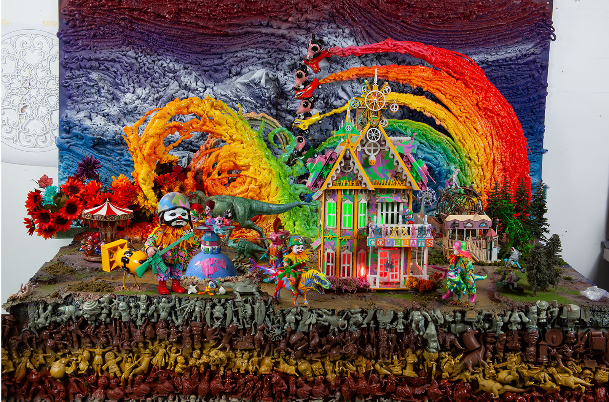
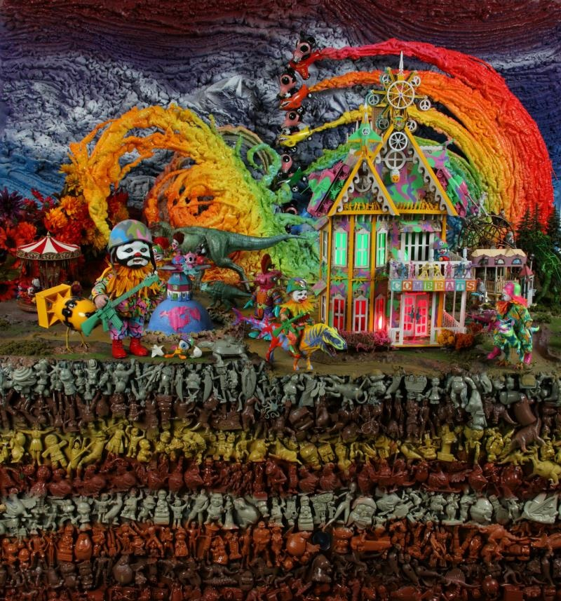
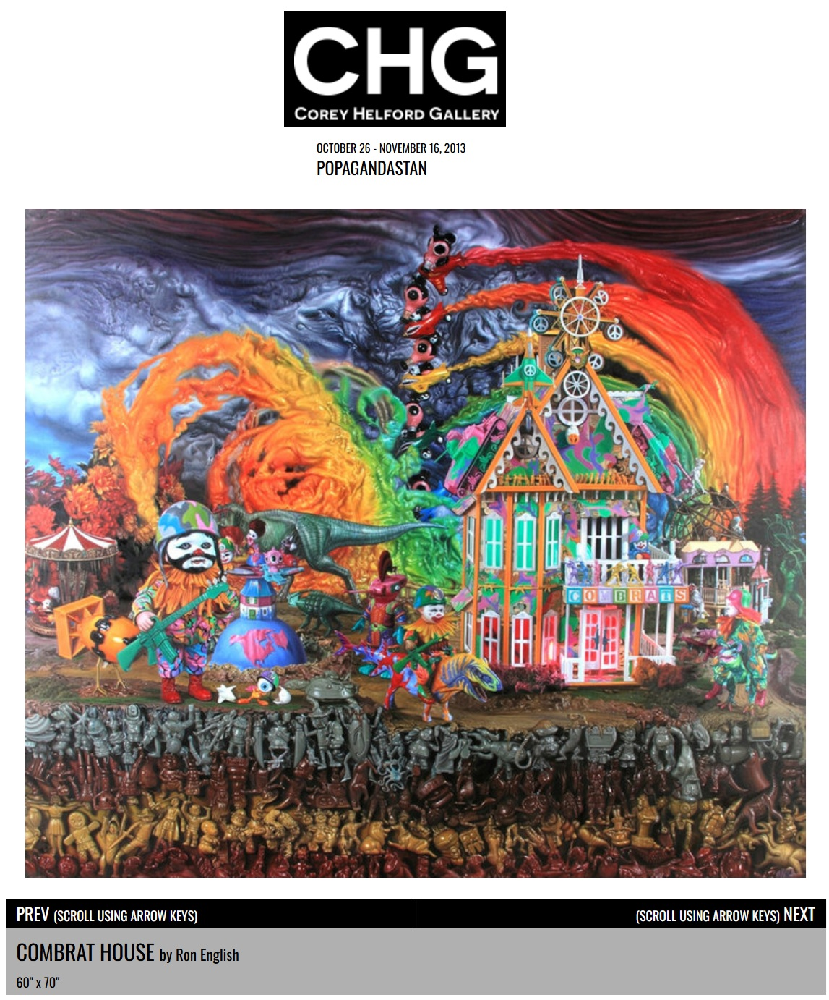
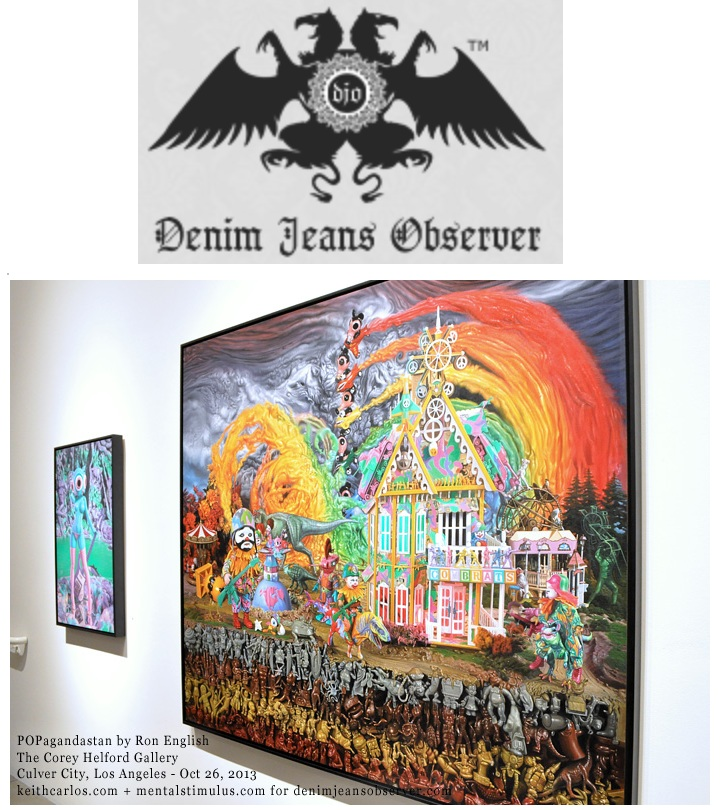
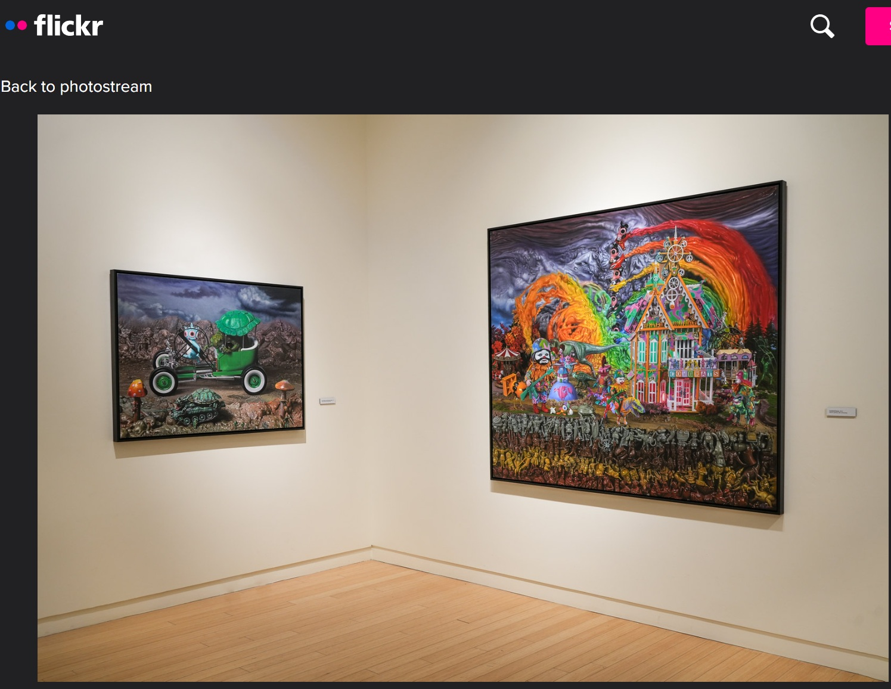
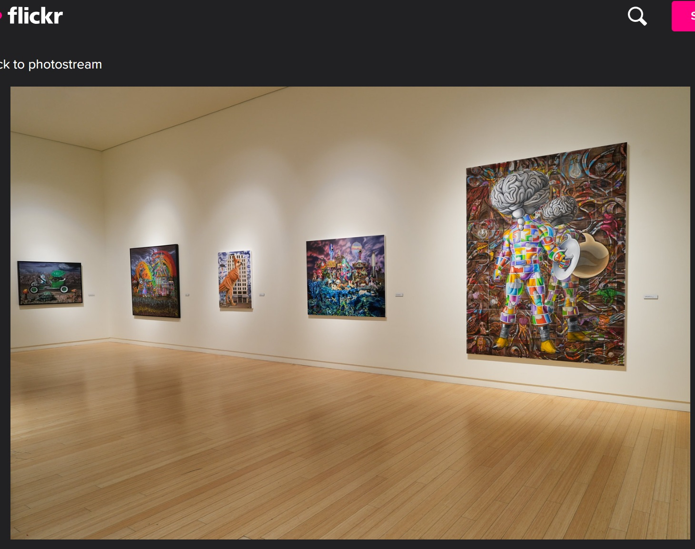

Exhibitions
POPAGANDASTAN – New Works from Ron English, Corey Helford Gallery, Los Angeles, California, US, October 26–November 16, 2013.
HEY! Modern Art & Pop Culture / Act III, Halle Saint Pierre, Paris, France, September 18, 2015–March 13, 2016.
Living in Delusionville, Mesa Contemporary Arts Museum, Mesa Arts Center, Mesa, Arizona, US, September 9, 2022–January 22, 2023.
POPAGANDASTAN – New Works from Ron English, Corey Helford Gallery, Los Angeles, California, US, October 26–November 16, 2013.
HEY! Modern Art & Pop Culture / Act III, Halle Saint Pierre, Paris, France, September 18, 2015–March 13, 2016.
Living in Delusionville, Mesa Contemporary Arts Museum, Mesa Arts Center, Mesa, Arizona, US, September 9, 2022–January 22, 2023.
Literature
Ron English, Fauxlosophy: The Art of Ron English (San Francisco: Last Gasp, 2016), p. 46. ISBN 978-0867196566.

Ron English, Death and the Eternal Forever (Korero Press, 2014), p. 72. ISBN 978-0957664920.

Ron English, Original Grin: The Art of Ron English (Paris: Cernunnos, 2019), p. 370. ISBN 978-2374950938.

Ancillary Documentation









Selected Online Circulation
Selected examples of the work’s online circulation, reproduction, or discussion. This list is not exhaustive; it is intended to document representative appearances of the image beyond formal exhibition and publication records.